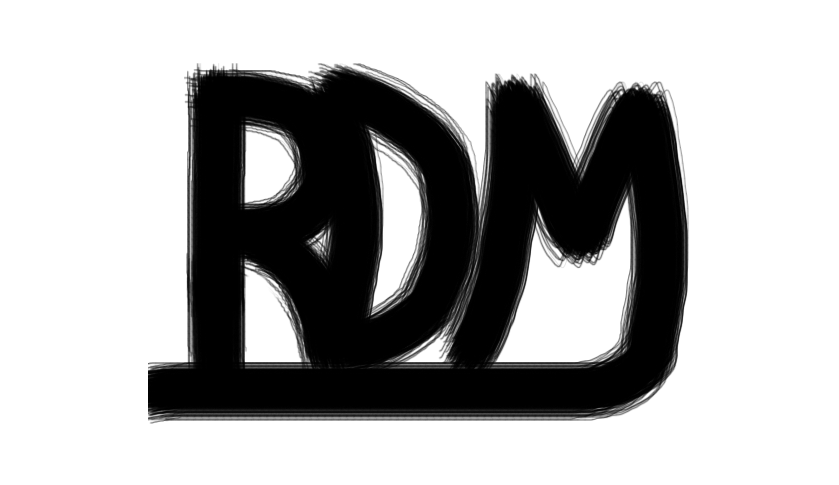
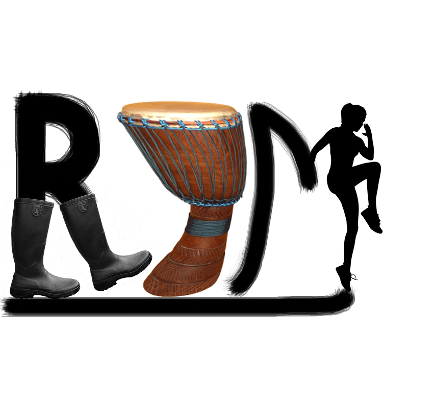

Historique
Rythmes du monde est une compagnie de danse qui se spécialise dans divers types de danses, mais aussi de percussions provenant d'un peu partout dans le monde.
La compagnie a été fondée en 2010 par Jessica Robichaud, Anthony Brochu et Vienna Von Arx. Les danses qui étaient présentes au commencement étaient: la danse folklorique, la Gigue, la danse en ligne et certaines danses sociales latines. Depuis, plusieurs autres activités rythmiques se sont rajoutées dans l'ordre suivant: d'autres danses sociales, le Bollywood, le Baladi, le Gumboot, la danse africaine, le Djembé, le Zumba et le Hip Hop.
Étant des gens ouverts d'esprit, nous voulons aller chercher le plus de monde possible, provenant de diverses cultures et de tous les âges. Nous croyons aussi que c'est important de parler de la provenance des divers services que nous offrons dans le but de mieux comprendre chacune des activités proposées. Nous voulons aussi que les personnes qui sont de provenances diverses puissent avoir un certain contact avec leur pays natal, mais aussi pour découvrir de nouvelles cultures.
Évolution du logo
En 2010

Notre premier logo, qui était très de base. Nous voulions créer notre logo le plus rapidement possible, mais nous n'arrivions pas à une idée originale. Alors, le voici à sa forme la plus simpliste avec les lettres de la compagnie, le tout souligné, pour avoir au moins une petite touche personnalisée.
En 2016

Notre logo évolué avec beaucoup plus d'originalité! Nous nous sommes inspirés des activités que nous offrons afin d'avoir réellement un logo à notre image. Nous ne voulions pas un logo totalement différent, c'est pourquoi nous avons un peu gardé la base de l'ancien et que nous y avons seulement apporté quelques modifications.
Les bottes de pluie du R sont donc pour représenter le Gumboot. Le D a été complètement changé pour un djembé, lequel nous avons transformé pour qu'il ait une forme plus courbée dans le but de ressembler davantage à un D. Puis, le M a été coupé en 2 pour en conserver seulement la moitié et en changeant un peu sa forme pour se mélanger mieux avec la 2e partie de la lettre qui a été remplacée par la silhouette d'une femme qui fait du Zumba. Nous tenions à conserver la ligne sous les lettres, puisque c'est ce qui donnait son originalité au logo original et elle peut d'ailleurs être perçue comme un plancher sur lequel les activités ont lieu.